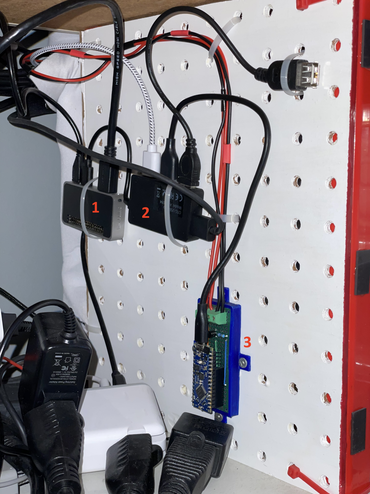

Infrared¶
Overview¶
I use Infrared signals to:
change profile of the Retrotink4K
change the input of the HDMI switch
This is how the whole process looks like:
This is how the whole setup looks like:

This image: 1. Raspberry pi Zero 2W – 2. USB Hub – 3. Arduino Nano Every with board. There’s one cable going to the Retrotink4K and another one going to the HDMI switch.¶

This image: an IR Led just above the keypad pointing at the Retrotink4K.¶
Home Assistant MQTT¶
Prerequisites¶
Setup Home Assistant’s MQTT Broker.
Automation¶
Create an automation to send the nec codes to mqtt2nec.
The codes match mqtt2nec’s config.csv. You can also send codes as hex strings.
The first value is common for the device and the next ones are the actual code you want to send.
service: mqtt.publish
data:
topic: nec/tx
payload: "{\"codes\": [ \"TINK4K\", \"TINK4K_1\" ]}"
mqtt2nec¶
Python program interfacing Home assistant with the arduino. It is installed on the Raspberry pi and runs as a service.
Installing the program¶
git clone git@github.com:jrobichaud/mqtt2nec.git
cd mqtt2nec
python3 -m venv venv
source venv/bin/activate
pip install -r requirements.txt
Running the program¶
Make sure to change the arguments to match your mqtt broker configuration.
python3 -m "mqtt2nec" "<home assistant url>" -u "<mqtt user>" -p "<mqtt password>" -a "./config.csv"
Service configuration¶
[Unit]
Description=mqtt2nec
Documentation=
After=network.target
[Service]
Type=simple
User=retro
ExecStart=/usr/bin/python3 -m "mqtt2nec" "<home assistant url>" -u "<mqtt user>" -p "<mqtt password>" -a "/home/retro/mqtt2nec/config.csv"
Restart=always
MemorySwapMax=0
[Install]
WantedBy=multi-user.target
Arduino¶
I used this kit to prototype: Basic Kit for Arduino
I use the Arduino Nano Every on my setup.
Circuit¶
I followed adafruit’s “sending ir codes” tutorial to build the circuit.
I used these IR Leds.
infrared-nec (Arduino program)¶
The program to install on the arduino: infrared-nec
This is a custom programming that communicates with the mqtt2nec program. It was heavily inspired by adafruit’s “sending ir codes” tutorial.
Capturing infrared codes (optional)¶
I used the circuit described here but I used this old source to capture the codes: MinimalReceiver.ino.